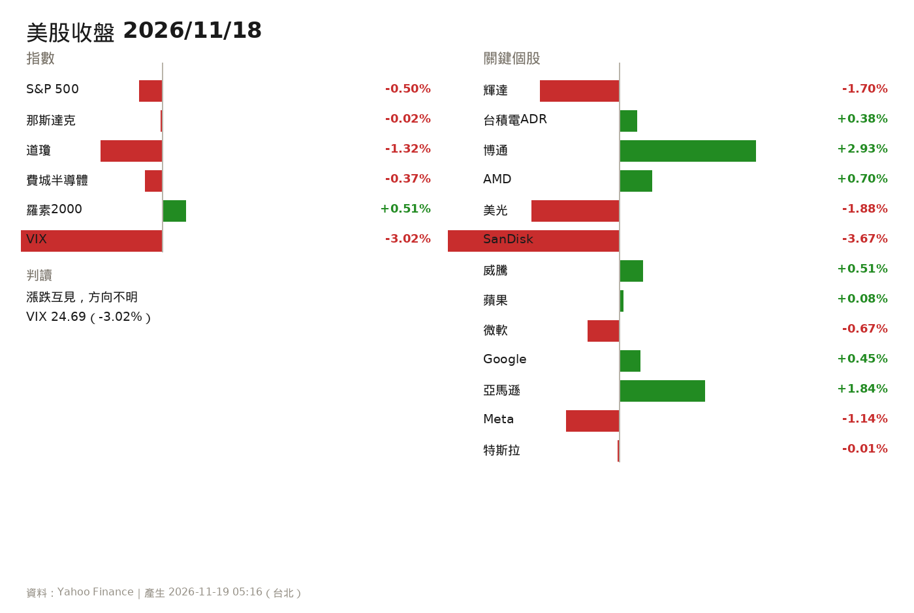
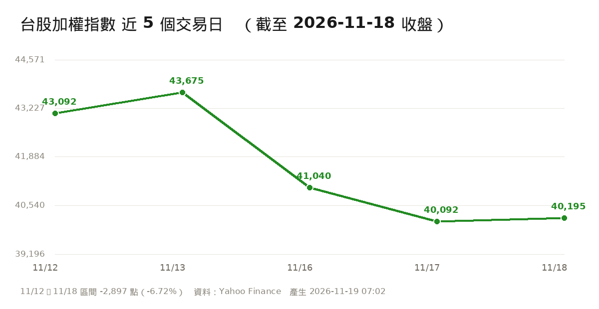
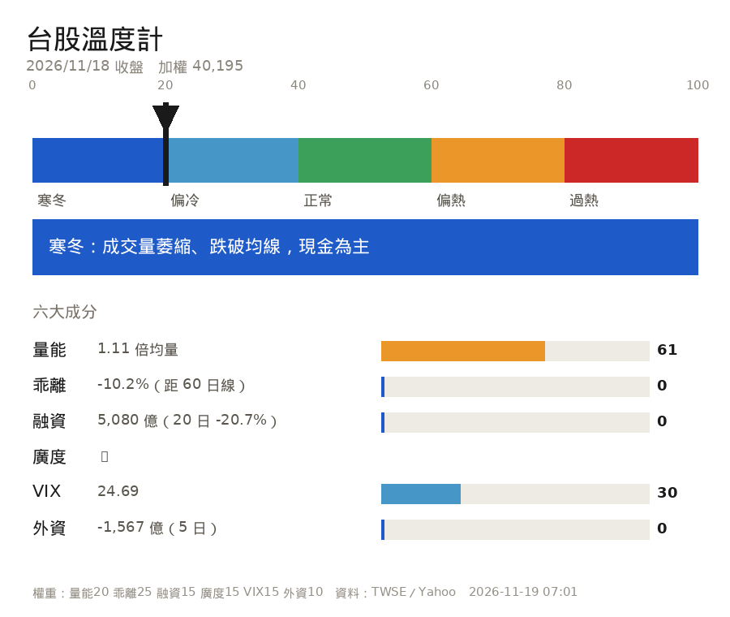
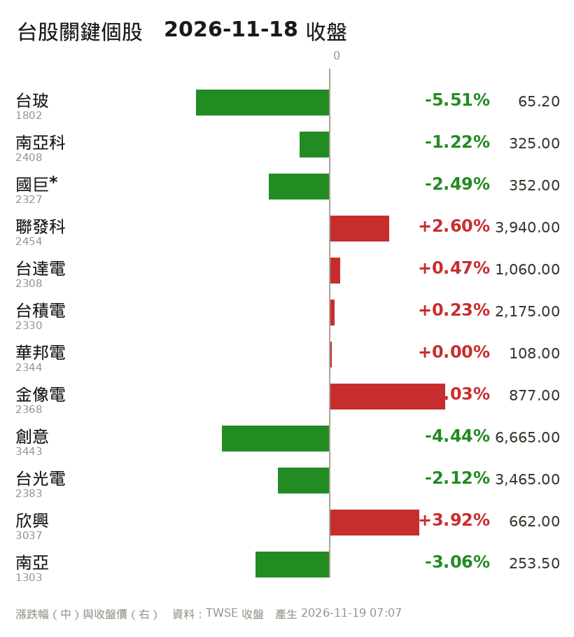
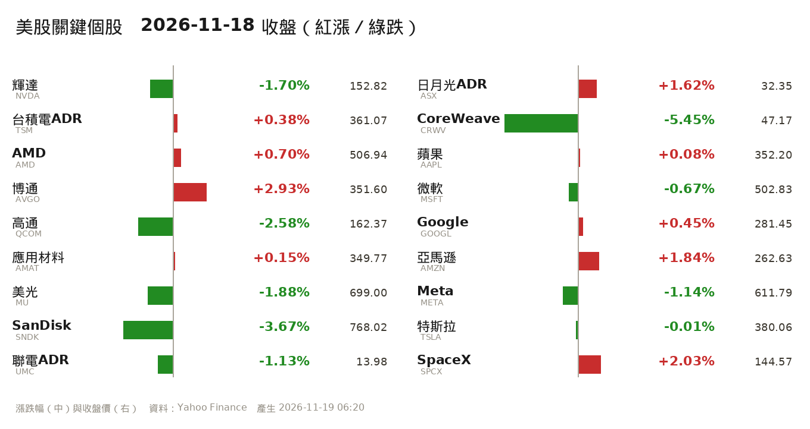
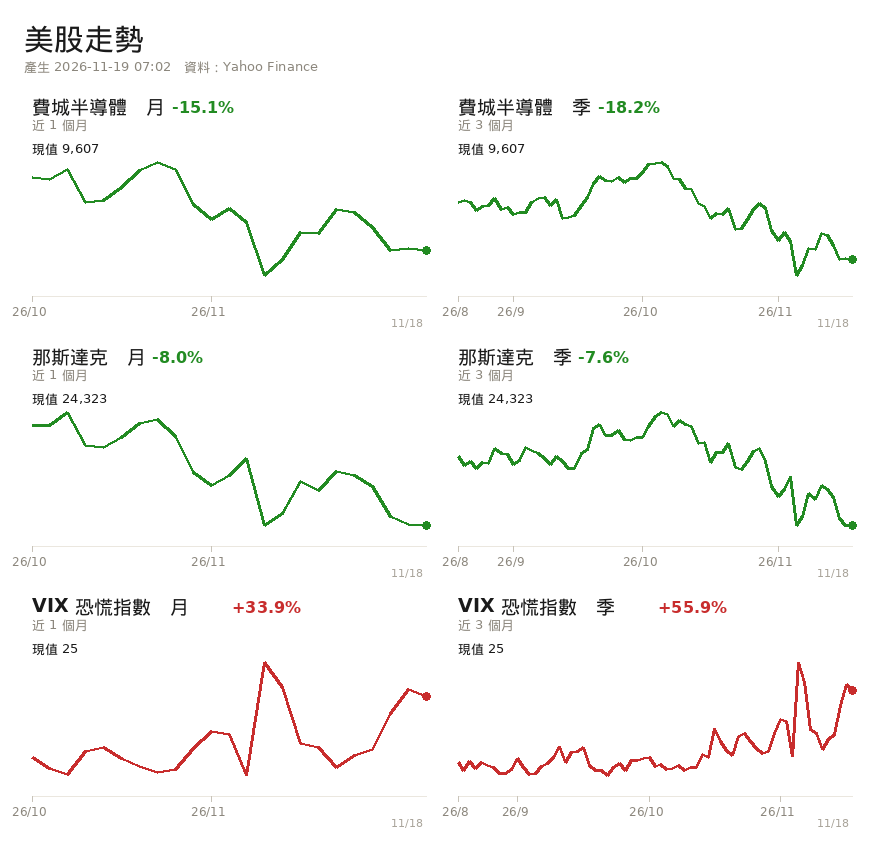
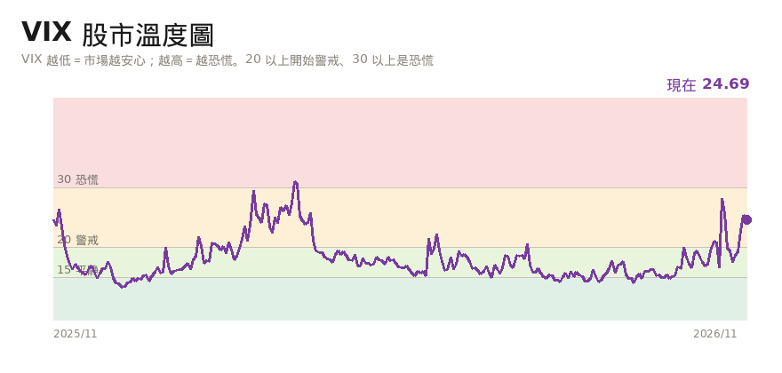
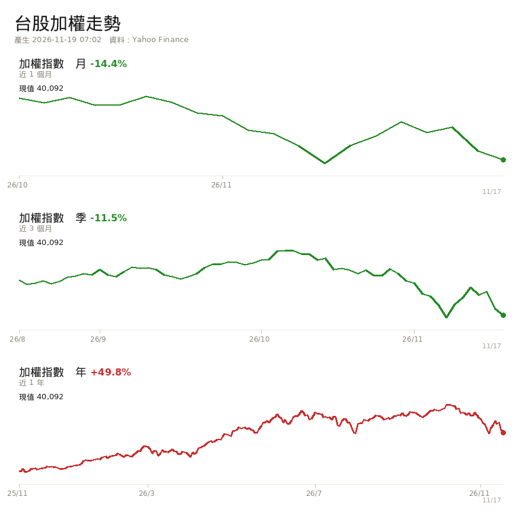

2026-11-19 投資日報2026-11-19 07:10
重點提醒｜Emmy（持續中）
來源：
財經頻道/Emmy追劇時間/Emmy重點提醒追蹤.md。未解除就會每天出現；判定解除當天標「過期」，隔天起不再列出。
- E1 輝達 NVDA／黃仁勳 真正風險不是技術洩密，是「走私晶片＋長期遊說晶片禁令」的國安問題。已持續 7 天。⬇️ 緩解（治理面）：11/18 董事會已成立內部「國家安全委員會」、公開表示願配合美國科技國安政策；代理執行長 Kress 接受電視專訪重申「不會讓黃仁勳復職」（貼文 11/19）。但正式新任 CEO 仍未定案，且傳 SEC 也要查輝達、黃仁勳 12/1 赴國會說明。解除條件：正式（非臨時）新任 CEO 定案並公開承諾對台供應鏈與產品路線不變，且財報與後續國會簡報後無新增出口管制。
- E2 台股／美股大盤 民主黨期中選舉大勝 → AI 資料中心與科技業監管收緊的恐慌，是 11/05-11/06 崩盤主因。已持續 11 天。➡️ 未變（等今日會談）：BIS 132 頁新規 11/17 生效後，11/19 川普、習近平、普丁在深圳 APEC 場邊舉行三方會談；川普 11/18 抵深圳由習近平親赴機場迎接、氣氛回暖，但雙方仍因 AI 晶片限制持續交鋒（游庭皓粉專 11/18）。解除條件：具體監管法案送進國會並過關，或政策明確轉向寬鬆。
- E3 台股／美股大盤 「熊市要來了嗎、該獲利了結嗎」——她事前提示了這一波下殺。已持續 18 天。⬆️ 惡化（籌碼）：11/18 加權收 40,194.91（+102.8 點／+0.26%），盤中高低差 1,677 點、成交 1 兆 318 億；外資賣超 765.64 億（連 3 賣共 1,848.46 億、本月累計約 8,000 億）、投信買超 175.58 億、三大法人合計 -632.07 億；融資僅減 6.95 億、維持率降至 156%；4 檔違約交割（創意近億元、華通、欣興 5,000 多萬、金像電）；上市漲停 21 家、跌停 4 家；台幣收 33.015 貶破 33。解除條件：指數站回季線且外資轉為連續買超。
- E4 油價／布蘭特原油 中東戰火推升油價 → 通膨壓力 → 股市下跌。已持續 21 天。➡️ 未變：布蘭特 1 月契約收 91.95（-1.28%）、WTI 83.26（-3.2%），仍在解除線 90 之上；荷姆茲海峽同一油輪兩度遇襲、美伊互相攻擊，但 IEA 上調供給與美國庫存增加壓抑油價。解除條件：布蘭特回落至 90 美元以下且中東衝突降溫。
- E5 記憶體族群／8299 群聯 大摩一次降 6 檔記憶體、目標價腰斬，群聯 2,588→1,357 降為「劣於大盤」；理由是 2028 供需恢復平衡＋美國資料中心約兩成產能延後到 2029。已持續 8 天。⬆️ 惡化：群聯 11/18 收 1,520（-0.98%），外資轉賣 596 張、中斷連 5 買，三大法人合計 -515 張；美銀示警 NAND 現貨自 10 月中下旬修正約 20%、IT 用 NAND 明年 Q1 合約再跌 5~10%。緩解項：高院駁回投保中心解任董事之訴（治理釐清）、60 元股利 12/15 除息。大摩目標價 1,357 未調整，現價仍高出約 12%。解除條件：NAND 現貨報價重新轉強且外資對群聯轉為買超，或大摩回補評等。
- E7 AI 硬體成本／毛利率見頂 輝達 Q4 毛利率指引 71~72%，低於本季 74.8%；採購承諾大幅增加，成本正往上游擠。已持續 1 天。➡️ 未變（口徑待核）：Q4 毛利率指引 71~72%、本季 74.8% 已確認；採購承諾出現兩版本——經濟日報 3,660 億→5,180 億、宏爺與本檔 2,790 億→3,900 億，待 10-Q 原文核對，暫不採用單一數字。解除條件：輝達毛利率回升至 74% 以上且採購承諾增速放緩，或記憶體現貨報價連續 2 個月回落。
- E6 台股 AI 供應鏈／Vera Rubin 平台（過期） ⬇️ 解除：輝達 11/18 財報明說 Vera Rubin NVL72 已進入量產出貨、是史上最快產能爬坡，Google Cloud／Azure／Oracle／CoreWeave 已開始部署（公司公告，已發生）；一綺 11/18 亦引用官方點名 6 家台廠支援量產。註：載板／CCL 股價尚未反映 → 明天起不再列出（紀錄保留在追蹤檔）
⚠️ 警報狀態
- 盤中危機警報（
alert_crisis.py，09:00–13:55 每 5 分）：排程正常，今天 09:00 起開始掃描；目前未觸發（07:00 未開盤）。 - 影片警報（
video_alert.py，22:20）：昨晚正常執行，Emmy EP.179、一綺 11/18、宏爺 11/18 三支都完成筆記，沒有再出現前幾晚的 OOM 中斷。 - 等級門檻：L1 大盤 -2%／個股 -5%（每 60 分重發）；L2 -3%／-7%（20 分）；L3 -4%／-9%（8 分）。你回「已處理」或「不處理」我就停止重複通知並寫進交易日誌。
⓿ 先回答三個問題：消息面 vs 已發生
1. 黃仁勳會不會回鍋？
已發生
| 項目 | 狀態 | 說明 |
|---|---|---|
| 董事會拒絕復職 | 已發生 | 董事長 Harvey Jones 11/18 財報電話會議：董事會一致接受辭呈、無意恢復；11/19 Kress 電視專訪重申同一立場 |
| 黃仁勳發聲明願意回歸 | 已發生 | 11/17 聲明「若董事會要求願回任」，並承認犯下「嚴重錯誤」 |
| 新任正式 CEO | 還沒發生 | 目前仍由財務長 Colette Kress 代理 |
| SEC 調查、12/1 赴國會 | 消息面 | 媒體轉述，公司未證實 |
怎麼用：把「黃仁勳回鍋」從你的決策變數裡拿掉。現在的定價點是「12/1 國會聽證講了什麼」和「新 CEO 是誰」。
2. BIS 新規對台積電、日月光出貨的影響有多大？
法規已發生 影響金額＝預估
| 項目 | 狀態 | 說明 |
|---|---|---|
| 132 頁新規生效 | 已發生 | 新、馬、泰、印尼、巴西五國納管；晶圓製造與封裝廠對五國 IC 設計公司出貨須向 BIS 申請 |
| 對台廠影響程度 | 預估 | 法人 11/18 評估「影響有限」；宏爺認為「訂單接滿≠營收入帳」，許可證會讓交期拖過季底 |
怎麼用：看 11/24 Dell／HP 財報時，管理層對「許可延誤」的說法，比看新聞標題有用。
3. Anthropic 掛牌能救 AI 股嗎？
定價已發生 掛牌表現＝今天才知道
| 項目 | 狀態 | 說明 |
|---|---|---|
| 發行價 83 美元 | 已發生 | 高於原先 70~78 區間，估值約 1.5 兆美元，募資（含 260 億私募）超過 940 億 |
| 掛牌首日 | ⏳ 還沒發生 | 今天在那斯達克以 ANT 交易 |
| 帶動 AI 鏈反彈 | 預估 | Emmy 認為 IPO 前三天投銀有綠鞋動機拉抬（參考 SpaceX 150→225），是「逃生窗口」不是買點 |
怎麼用：看它開盤後的成交量與是否守住 83 美元。破發＝AI 評價再下修一階。
① 一句話結論
市場溫度 20／100（寒冬）——財報很好、籌碼很爛：指數靠四檔權值撐住 4 萬點，但外資連 3 賣 1,848 億、融資只減 6.95 億、4 檔違約交割，這是「用權值粉飾的分歧盤」，不是底部。今天先看 Anthropic 掛牌與川習普會談，站不上 40,938 之前，反彈都當調節點，不當進場點。
🎒 JNA-202 PRO 快取單肩包：目前最低 2,800（BigGo／飛比，全新），目標 1,500，還差 1,300，未達標。
② 國際與美股
四大指數（11/18 收盤，已發生）
| 指數 | 收盤 | 漲跌 | 判讀 |
|---|---|---|---|
| 道瓊 | 50,198.17 | -1.11% | 醫療保險類股重挫拖累，連 3 黑、5 個月新低 |
| 標普 500 | 7,323.63 | -0.23% | 連 5 跌，近 4 個月低點 |
| 那斯達克 | 24,429.88 | +0.42% | 唯一收紅，AI 權值撐住 |
| 費城半導體 | 9,652.80 | +0.10% | 連續 2 日止穩，但個股分化極大 |
| VIX | 24.69（盤中） | -3.02%（盤中） | 恐慌沒擴大，但仍在 20 以上 |
關鍵個股（24 檔，Nasdaq 官方收盤）
| 名稱 | 收盤 | 漲跌 | 一句判讀 |
|---|---|---|---|
| 輝達 NVDA | 150.96 | -2.89% | 財報三項超預期仍收黑，連 5 跌、距 10 月高點 -37% |
| 台積電 ADR TSM | 362.55 | +0.80% | 折台股 2,393.9 元，對現貨 2,175 溢價 10.1% |
| AMD | 530.14 | +5.31% | 蘇姿丰喊「AI 晶片仍供不應求」，全場最強 |
| 博通 AVGO | 354.05 | +3.64% | ASIC 路線受益，費半止穩的主要功臣 |
| 高通 QCOM | 159.81 | -4.12% | 手機需求疑慮，跌最多的大型晶片股 |
| 應用材料 AMAT | 352.30 | +0.88% | 設備股抗跌，BIS 新規影響被認為有限 |
| 美光 MU | 705.27 | -1.00% | 美銀示警 NAND 現貨修正 20%，DRAM 仍撐 |
| SanDisk SNDK | 776.22 | -2.64% | NAND 純度最高，受傷最直接 |
| 聯電 ADR UMC | 13.97 | -1.20% | 成熟製程跟著半導體震盪 |
| 日月光 ADR ASX | 32.535 | +2.21% | 封裝被 BIS 點名要許可，股價卻收紅（利空測試） |
| CoreWeave CRWV | 47.83 | -4.13% | 新興雲端，融資成本上升先受傷 |
| SpaceX SPCX | 143.50 | +1.27% | 太空題材續熱，台股低軌衛星族群同步漲停 |
| ARM | 182.76 | -0.34% | 與 NVDA 同步走弱，ASIC 授權模式未被追價 |
| Marvell MRVL | 145.54 | -2.15% | 光通訊／ASIC 雙題材，12/1 財報是下個考驗 |
| Coherent COHR | 212.60 | +0.83% | 光通訊抗跌，資料中心內部連線需求還在 |
| Ciena CIEN | 266.17 | +0.51% | 同上，電信設備訂單穩定 |
| Lumentum LITE | 551.07 | -1.59% | 光通訊最弱一檔，短線漲多回吐 |
| Vertiv VRT | 194.47 | +2.15% | 散熱電源龍頭收紅，AI 機房仍要蓋 |
| 蘋果 AAPL | 352.45 | +0.15% | 防禦型權值，波動最小 |
| 微軟 MSFT | 508.29 | +0.40% | 軟體股殺盤中逆勢收紅 |
| Google GOOGL | 282.44 | +0.80% | 自研 TPU 路線受益 |
| 亞馬遜 AMZN | 267.74 | +3.82% | AWS 成長＋資本支出可控，四大巨頭最強 |
| Meta META | 616.38 | -0.40% | 小幅拉回，資本支出疑慮未解 |
| 特斯拉 TSLA | 383.72 | +0.95% | 跟隨太空／自駕題材 |
上漲的部分（別只看跌）
24 檔中有 14 檔收紅：AMD +5.31%、亞馬遜 +3.82%、博通 +3.64%、日月光 ADR +2.21%、Vertiv +2.15%、SpaceX +1.27%、特斯拉 +0.95%、應材 +0.88%、Coherent +0.83%、台積電 ADR +0.80%、Google +0.80%、Ciena +0.51%、微軟 +0.40%、蘋果 +0.15%。跌的是 GPU 與記憶體，漲的是 ASIC、雲端與散熱——這不是全面崩盤，是資金換手。

跨市場
| 項目 | 數值 | 漲跌 |
|---|---|---|
| 美 10 年期殖利率 | 5.07% | -0.61% |
| 美 5 年期殖利率 | 4.88% | -0.37% |
| 美元指數 | 103.83 | +0.33% |
| 布蘭特原油（1 月） | 91.95 | -1.28% |
| WTI 原油（12 月） | 83.26 | -3.20% |
| 黃金 | 3,758.10 | -2.75% |
| 美元／台幣 | 33.015 | 貶破 33（午後報價） |
| VIX | 24.69（盤中） | -3.02% |
上漲主因：AMD 喊 AI 晶片供不應求、博通 ASIC 訂單、亞馬遜 AWS 成長與資本支出可控，加上 Anthropic 以 83 美元高於區間定價，讓「AI 需求沒斷」的說法有一天的證據。 下跌主因：輝達財報後被多家投行下調目標價（執行長交接＋出口管制不確定）、FOMC 10 月紀要偏鷹（市場認為 12 月升息 1 碼機率 95.4%）、醫療保險類股重挫拖累道瓊。
③ 台股覆盤

盤勢節奏
早盤開高 40,720.09（+627.98 點），隨輝達財報衝到 40,938.20（+846.09 點），中場翻黑下殺到 39,260.99（-933.9 點），尾盤靠台指期結算軋空與台積電拉抬收 40,194.91（+102.80 點）。單日振幅 1,677 點、4.18%，成交 1 兆 318 億。
| 項目 | 數值 | 說明 |
|---|---|---|
| 加權指數 | 40,194.91 | +102.80 點／+0.26% |
| 成交金額 | 約 1.31 兆元 | 近 3 日最高 |
| 櫃買指數 | 307.55 | -0.94 點／-0.31%（弱於大盤） |
| 三大法人 | -632.07 億 | 外資 -765.64、投信 +175.58、自營 -42.02 |
| 外資累計 | 連 3 賣 1,848.47 億 | 本月約 -8,000 億、今年 -3.17 兆 |
| 融資餘額 | 5,080 億 | 單日僅減 6.95 億，維持率 156% |
| 漲停／跌停 | 22 檔／3 檔 | 收盤鎖住（TWSE 收盤資料） |
| 台幣 | 33.015 | 貶破 33 關卡 |
兩個矛盾點：① 指數收紅但櫃買收黑、金融股殺到跌停（玉山金 -10%、元大金／台新新光金／華南金 -5%）；② 漲停 22 檔 vs 跌停 3 檔，看起來很強，但集中在低軌衛星、PCB、ASIC 這些小族群，是「故事在漲」不是「訂單在漲」。
④ 頻道影片重點
Emmy 追劇時間 EP.179（11/17 錄音，會員影片）
🔴 加碼／看多訊號
| 標的／主題 | 她的說法 | ⏱ |
|---|---|---|
| 四大巨頭（AWS／微軟／Meta／Google） | 中國買家被禁令擋掉後，半導體漲不動，四大巨頭採購成本可控；現存算力中心變稀缺，反而有漲價能力 | 約 08:30 |
| Anthropic IPO（11/19 掛牌） | 超額認購強勁、提前到 11/19；七大巨頭認股 260 億，投銀有綠鞋動機拉抬（參考 SpaceX 前三天 150→225 美元） | 約 17:40 |
| 現金 | 她「慢慢出清 AI 持股、先拿一部分現金」，這是全集最明確的動作 | 約 10:30 |
| 反彈逃生窗口 | 11/19 到 12 月初是最好的減碼窗口 | 約 14:20 |
🟢 危機／減碼訊號
| 風險 | 她的說法 | ⏱ |
|---|---|---|
| BIS 新禁令（11/17 凌晨，132 頁） | 新、馬、泰、印尼、巴西全列入，堵死「第三地資料中心跑遠端算力」這條路 | 約 01:30 |
| 半導體漲價能力到頂 | 中國買家消失 → 少一整塊需求 → 記憶體等漲價最兇的族群先受傷，財報要 1～2 季才恢復 | 約 07:10 |
| AI 泡沫 | 原估 2027 年 1 月或 4 月爆，因禁令延到 2027 下半年（7 月或 10 月），但「泡沫始終要破」 | 約 12:50 |
| 這次只是熊市 | 金融危機是「流動性凍結、沒人敢買任何東西」，那個還沒來 | 約 22:00 |
| Anthropic 的帳 | 十年算力＋晶片合約近 9,000 億美元，一年要付近 1,000 億，公司還沒賺錢 → 2027 年底要再融資 | 約 19:30 |
一綺聊股 2026-11-18（直播 1:19:28，轉錄 0:00–43:40）
🔴 加碼／看多
- 國家隊明顯在守 4 萬點，靠台積電、聯發科、日月光、鴻海四檔撐盤 ⏱[05:31]、[14:15]
- 2330 台積電在輝達官方點名支援 Vera Rubin 量產的 6 家台廠名單內，今天也是撐盤主力 ⏱[28:14]
- Vera Rubin 已開始大量出貨、進入雲端服務商基礎設施，打臉「延後交貨」傳言 ⏱[24:07]
- 空手的人等打底訊號再進，不必搶第一根；但不要在套牢處攤平 ⏱[29:30]、[30:36]
- 2449 京元電從 330 跌到 194，今天漲停，也在輝達點名名單內 ⏱[30:36]
🟢 危機／減碼
- 今天最慘不是 CCL／玻纖布／CPO，是金融股：玉山金跌停、元大金／台新新光金／華南金 -5% ⏱[06:41]、[07:23]
- 外資再賣 765 億、連 3 賣；她的判讀是「亞洲資金成本變貴、錢要回去美國」 ⏱[16:28]、[17:32]
- 洗盤這麼劇烈，融資只減 6.95 億、維持率回到 156% → 籌碼沒洗乾淨 ⏱[42:15]、[42:59]
- 4 檔違約交割：創意（近億元）、華通、欣興（5,000 多萬）、金像電 ⏱[21:18]、[21:53]
- 創意上週連三根長紅，這週連三根跌停、正式破季線 ⏱[20:48]
- 主動式 ETF 前十檔有七、八檔一樣，殺盤時一起被提款、人踩人 ⏱[18:28]、[19:31]
- 市場傳 12 月可能再升息，房貸與防禦型資金壓力往上 ⏱[16:28]
宏爺講股 2026-11-18（22:08，錄於 11/18 清晨）
🔴 加碼／看多
- 輝達 Q3 營收 1,158 億（+103%）、資料中心 1,076 億，Q4 指引 1,300 億、2028 會計年度成長上調到 75% ⏱[00:05]、[00:43]
- 輝達採購承諾大幅拉高以鎖記憶體料源 → 記憶體廠先拿長單收錢 ⏱[01:26]、[02:05]
- 台積電 ADR 盤後 +5.79%（當時）⏱[08:18]
- 上市櫃前三季稅前淨利 6 兆 2,273 億、年增 82.69%（剔除金控）⏱[15:49]
- 融資從 6,000 億以上砍到 5,087 億、維持率 158.57%，離 130% 追繳還有 28 個百分點 ⏱[07:40]、[15:06]
- 亞馬遜 AWS Q3 營收 460 億（+39.3%）、營業利益 114 億→178 億美元 ⏱[17:55]
🟢 危機／減碼
- 美股技術面：道瓊 -848 點跌破短中期均線、那指連三黑跌破所有均線、月線死亡交叉 ⏱[02:54]、[03:36]
- 外資期貨空單仍 9.7 萬口、選擇權空單 2.3 億元，「小小拉、大大的出」⏱[05:01]、[14:26]
- 台股 K 棒連五黑、年線保衛戰，兩天跌 3,583 點（-8.2%），中小型股已破 11 月低點 ⏱[05:39]、[06:20]
- 輝達毛利率 74.8% → 71~72%，成本自己先吞；客戶不接受漲價就「陣痛變慢性病」⏱[01:26]、[02:05]
- 美商務部把「海外租算力」納管，馬泰機房若換不到美系長約，台灣設備商交貨延誤 ⏱[10:21]、[11:04]
- AI 機房財務：甲骨文新墨西哥機房沒接電；匯豐 85 折賣 3 億美元機房貸款認賠 4,500 萬 ⏱[11:44]、[12:25]
- 10 年美債 5.12%、實質 2.92%、美元指數創 19 個月新高，銀行對「沒插頭的機房」條件更苛 ⏱[13:09]、[13:47]
- 訂單接滿 ≠ 營收入帳：中間隔著一張美方許可證 ⏱[16:32]
📊 情緒溫度計（逐字稿實算）
| 集數 | 危機詞 | 看多詞 | 判讀 |
|---|---|---|---|
| Emmy EP.179（11/17） | 6（泡沫×5、暴跌×1） | 2（看好×2） | 偏空 |
| 一綺聊股 11/18 | 0 | 2（看好、成長） | 表面偏多，但危機段全是「結構性」描述，ASR 用詞不同會低估 |
| 宏爺講股 11/18 | 6（恐慌×3、減碼×2、泡沫×1） | 2（成長、創高） | 偏空 |
語氣判讀：三集裡兩集偏空，唯一偏多的一綺也在講「四萬點是防線不是底部」。共識是「財報很好，但沒人敢追」——這種語氣通常對應「反彈有、趨勢沒有」。⚠️ 一綺這集沒有中文字幕、是 Whisper 聽打，詞頻會系統性低估。
🔵 中長期展望（產業趨勢）
- ASIC 出貨動能明年超越 GPU（集邦 11/17）：CSP 自研 AI 晶片，2454 聯發科、創意、世芯這條線的成長率高於 GPU 代工。
- 半導體定價能力下滑：BIS 把中國買家擠出市場，過去「兩批客戶搶貨」的漲價循環結束，記憶體最敏感（EP.179）。
- AI 泡沫時間表延後到 2027 下半年（7 月或 10 月）：禁令壓住上游漲價，反而讓泡沫晚一點破，但沒消失。
- 源頭買家的財務才是關鍵：Anthropic 十年 9,000 億採購、一年近 1,000 億帳單、2027 底要再融資；它在 5% 利率環境能不能借到錢，決定 AI 資本支出能不能延續。
- 現存算力中心變稀缺資產：新機房因禁令與貸款緊縮放慢，四大巨頭的議價能力上升、折舊中的舊機房反而漲價。
- 太空／低軌衛星成新題材：SPCX 上市後資金開始找「算力以外的故事」，11/18 台股低軌衛星族群多檔漲停（環科、萬泰科、事欣科）。
📰 Emmy 貼文（貼文，非影片）
已發生
- 董事會定調不讓黃仁勳復職：Kress 代表董事會在電視專訪表明（貼文 11/19）。
- 輝達內部成立「國家安全委員會」，表達願配合美國科技國安政策（她轉述，公司未發新聞稿）。
- BIS 132 頁新規：五國納管、1,200 萬 TPP 以上算力輸出須許可、晶圓製造與封裝廠對五國 IC 設計公司出貨須申請（貼文 11/18，直接點到台積電、日月光）。
她的觀點（不是事實）
- 黃仁勳該做的是配合國安調查、釐清內部流程，員工連署或找老黃重新創業都沒用；「抵抗或蔑視只是在拖延自己回去的時間」。
- 美國國安單位「已經非常客氣」，只爆出戀情與內部問題，後面還有 SEC 與國會。
📌 三句話摘要：① 董事會把話說死，改由「國安委員會」對接監管；② 真正壓力是 BIS 把第三地遠端算力堵掉，台積電、日月光出貨要許可；③ 立場沒變：是熊市不是金融危機，但要慢慢找逃生窗口，別賭最後一波。
今日留言 0 則有產業資訊（20 則中全為粉絲互動），不引用。
📺 一綺聊股最近一期（2026年11月18日）
2026年11月18日 一綺聊股｜2026-11-18 黃仁勳回不來了？金融股都殺跌停？外資繼續砍！台股四萬守不住？
🔗 筆記：財經頻道/一綺聊股/2026-11-18_黃仁勳回不來了金融股殺跌停/2026-11-18_黃仁勳回不來了金融股殺跌停.md
🟢 可以留意／建倉的標的
- 大盤（4 萬點） 國家隊明顯在守 4 萬點，今天靠台積電、聯發科、日月光、鴻海四檔撐盤
- 2330 台積電 輝達點名支援 Vera Rubin 量產的台廠之一；今天也是撐盤主力
- 輝達 Vera Rubin 已經開始大量出貨、進入雲端服務商基礎設施 → 打臉「延後交貨」的鬼故事
- 操作建議 「空手的人」可以等打底訊號出現再進，不必搶第一根；但不要在被套的地方攤平
- 2449 京元電 從 330 跌到 194（腰斬），今天漲停，也在輝達點名名單內
🔵 中長期展望（產業趨勢）
- 長期（2027）：市場在找「下一個說故事的人」。如果馬斯克的太空／衛星／物理 AI 敘事成立，資金會從純算力轉向「算力＋應用＋太空」，這是 2330／2454／8299 之外要開始留意的新族群。
🔴 危機／要避開
- 金融股 今天最慘不是 CCL／玻纖布／CPO，而是金融股：玉山金殺到跌停、元大金 -5%、台新新光金 -5%、華南金 -5%
- 外資 今天再賣 765 億、連 3 賣；她的判讀是「外資不是針對台灣，是亞洲資金成本變貴、要回去美國」
- 融資 洗盤這麼劇烈，融資只減 6.95 億、維持率回到 156% → 籌碼沒洗乾淨
- 違約交割 今天 4 檔爆違約交割：創意（金額近億元）、2313 華通、3037 欣興（5,000 多萬）、2368 金像電
- 創意 上週連拉三根長紅，這週連三根跌停、今天正式破季線
- 主動式 ETF 持股重複度太高（前十檔有七、八檔一樣），一起被提款時沒有風控空間
🚫 不要做的事（避坑）
- 不要因為「國家隊守 4 萬點」而加碼：指數守住跟個股守住是兩件事。
- 不要追今天漲停的個股（京元電、低軌衛星族群）：這是「故事」在漲，不是訂單在漲。
- 不要買主動式 ETF 來「分散風險」：重複持股在殺盤時沒有分散效果。
- 不要用融資等反彈：今天 4 檔違約交割就是答案。
📌 本集結論
- 今天真正的大事不是輝達財報，是金融股殺盤：玉山金跌停、四檔金控 -5%，併購增資（公司面）＋外資提款（資金面）同時發生。
- 4 萬點不是底部，是防線：靠四檔權值撐出來的指數，跟中小型股體感完全脫鉤。
- 輝達財報「已知的好」對上「未知的爛」：市場交易的是毛利率與客戶資本支出，不是營收。
⑤ 我的持股動態
2330 台積電
| 項目 | 內容 |
|---|---|
| 11/18 收盤 | 2,175 元（+5 元／+0.23%），成交 42,269 張 |
| 籌碼 | 外資賣超 15,453 張、連 5 賣；近 5 日 -45,099 張 |
| ADR | 362.55（+0.80%），折台股 2,393.9 元，溢價 10.1% |
| 消息 | 輝達代理執行長 Kress 說台積電高層親赴送暖，並宣布與景碩、矽品合作擴充先進封裝；Vera Rubin NVL72 已量產出貨 |
| 判讀 | 基本面（Rubin 量產）向上、籌碼（外資提款＋台幣貶）向下。這是「撐不撐得過波動」的問題，不是「公司有沒有變壞」 |
| 成本／停損 | 持股檔仍是「（填）」，無法算停損價與損益 |
2454 聯發科
| 項目 | 內容 |
|---|---|
| 11/18 收盤 | 3,940 元（+100 元／+2.60%），成交 15,100 張 |
| 籌碼 | 外資賣超 986 張、連 3 賣；近 5 日僅 -258 張 |
| 消息 | 被當成撐盤四檔之一；ASIC 邏輯（CSP 自研晶片仍需設計整合）是中期題材 |
| 判讀 | 這是「被用來撐指數」的漲法，不是個股利多。隔天常還回去，不要當成轉強訊號 |
| 成本／停損 | 同上，未填 |
8299 群聯
| 項目 | 內容 |
|---|---|
| 11/18 收盤 | 1,520 元（-15 元／-0.98%），成交 4,695 張；盤中最高 1,625、最低 1,455 |
| 籌碼 | 外資轉賣 596 張（中斷連 5 買）、投信 -15 張、自營 +96 張，三大法人 -515 張 |
| 消息① | 美銀示警：NAND 現貨自 10 月中下旬修正約 20%，IT 用 NAND 明年 Q1 合約再跌 5~10%（DRAM 仍看漲） |
| 消息② | 高院駁回投保中心對公司與前董座的民事解任董事之訴，公司說營運正常、判決無影響 → 治理不確定性下降 |
| 消息③ | 60 元現金股利、12/15 除息；11/27 13:30 富邦證券投資論壇 |
| 判讀 | 現價 1,520 仍比大摩目標價 1,357 高約 12%。反彈到 1,600 以上是減碼機會，不是攤平機會 |
| 成本／停損 | 同上，未填 |
🎒 比價追蹤：JNA 包款（目標 1,500）
更新 11-19 07:03｜資料 BigGo／飛比。JNA-202 PRO 官方是「單肩包」。
| 品項 | 全新最低 | 福利品 | 二手 | 距目標 |
|---|---|---|---|---|
| JNA-202 PRO 快取單肩包 | 2,800 | 2,940 | — | 還差 1,300 |
未達標：目前最低仍高於 1,500 元，繼續追。
⑥ 觀察清單與法人動向
| 代碼 | 名稱 | 現價 | 漲跌 | 成交量 |
|---|---|---|---|---|
| 2330 | 台積電 | 2,175.0 | +0.23% | 42,269 張 |
| 2308 | 台達電 | 1,060.0 | +0.47% | 19,990 張 |
| 2454 | 聯發科 | 3,940.0 | +2.60% | 15,100 張 |
| 3443 | 創意 | 6,665.0 | -4.44% | 5,787 張 |
| 2383 | 台光電 | 3,465.0 | -2.12% | 6,378 張 |
| 2408 | 南亞科 | 325.0 | -1.22% | 47,760 張 |
| 3037 | 欣興 | 662.0 | +3.92% | 47,195 張 |
| 1802 | 台玻 | 65.2 | -5.51% | 193,489 張 |
| 1303 | 南亞 | 253.5 | -3.06% | 126,643 張 |
| 2327 | 國巨* | 352.0 | -2.49% | 55,721 張 |
| 2368 | 金像電 | 877.0 | +5.03% | 14,600 張 |
| 2344 | 華邦電 | 108.0 | -0.46% | 61,191 張 |
| 3661 | 世芯-KY | 3,950.0 | +9.87% | 4,546 張 |
外資動向（買賣超，單位：張）
| 代碼 | 名稱 | 今日 | 連續 | 近 5 日累計 | 近 10 日累計 |
|---|---|---|---|---|---|
| 1802 | 台玻 | -28,093 | 賣超 4 天 | +74,781 | +164,539 |
| 1303 | 南亞 | -12,597 | 賣超 6 天 | -53,216 | -78,218 |
| 2330 | 台積電 | -15,453 | 賣超 5 天 | -45,099 | -89,098 |
| 2308 | 台達電 | -2,575 | 賣超 1 天 | -8,940 | -19,826 |
| 3037 | 欣興 | -3,349 | 賣超 1 天 | -6,444 | -26,793 |
| 2344 | 華邦電 | -2,831 | 賣超 2 天 | -4,417 | -22,751 |
| 2327 | 國巨* | -89 | 賣超 1 天 | +2,913 | -5,459 |
| 2383 | 台光電 | -119 | 賣超 1 天 | +1,014 | -3,203 |
| 3661 | 世芯-KY | -125 | 賣超 2 天 | +758 | +1,422 |
| 2368 | 金像電 | -1,157 | 賣超 1 天 | -614 | -3,077 |
| 2408 | 南亞科 | -4,399 | 賣超 1 天 | -274 | +6,691 |
| 2454 | 聯發科 | -986 | 賣超 3 天 | -258 | -12,617 |
| 3443 | 創意 | -210 | 賣超 2 天 | -69 | -1,316 |
法人資料截止：2026-11-18（TWSE T86）｜報價時間 13:30:00
🧮 ETF 共識持股（跨發行商）
追蹤 5 檔 AI／半導體 ETF（SMH、SOXX、XLK、QQQ、VGT）前 25 大持股；≥4 檔同時持有才列入。查詢 2026-11-19 07:03。這是「被動資金需求」的參考，不是買進建議。
| 股票 | 名稱 | 持有 ETF 檔數 | 合計權重 |
|---|---|---|---|
| NVDA | NVIDIA | 5 | 59.9% |
| AMD | Advanced Micro Devices | 5 | 28.4% |
| AVGO | Broadcom | 5 | 27.5% |
| MU | Micron | 5 | 22.9% |
| TXN | Texas Instruments | 5 | 15.8% |
| INTC | Intel | 5 | 13.3% |
| AMAT | Applied Materials | 5 | 12.3% |
| LRCX | Lam Research | 5 | 11.4% |
| ADI | Analog Devices | 4 | 12.3% |
| QCOM | Qualcomm | 4 | 11.0% |
| KLAC | KLA | 4 | 10.5% |
| MRVL | Marvell | 4 | 8.2% |
本期換股：SOXX 刪除 TSEM。台股 ETF 目前尚未接入（發行商持股為 JS 載入）。
⑦ SWOT
| 內容 | |
|---|---|
| S 優勢 | 台積電 Vera Rubin 已量產、ADR 溢價 10.1%；上市櫃前三季獲利年增 82.69%；投信連日買超 175 億護盤；台股溫度 20 分已在「跌深」區 |
| W 劣勢 | 外資連 3 賣 1,848 億、本月賣 8,000 億；融資只減 6.95 億、維持率 156%；4 檔違約交割；台幣貶破 33；三檔持股成本未填，無法算停損 |
| O 機會 | Anthropic 今天掛牌若守住 83 美元可帶動 AI 鏈情緒；川習普會談若換到許可鬆綁；AI 泡沫延後到 2027H2 給了逃生時間；ASIC／低軌衛星族群資金還在 |
| T 威脅 | BIS 許可制讓出貨延後、Q4 認列遞延；12 月升息機率 95.4%；NAND 現貨修正 20%；主動 ETF 重複持股造成二次賣壓 |
⑧ 財經行事曆
| 日期 | 事件 | 為什麼重要 |
|---|---|---|
| 11/19（四） | Anthropic（ANT）那斯達克掛牌，發行價 83 美元 | 檢驗一級／二級市場對 AI 的真實風險偏好；破發＝評價再下修 |
| 11/19（四） | 川普、習近平、普丁深圳 APEC 三方會談 | 決定 BIS 新規會不會再加嚴或鬆綁 |
| 11/19（四） | 美國上週初領失業金 | 搭配 12 月升息機率 95.4% 看勞動市場 |
| 11/20（五） | 台股 11 月合約結算後第 2 個交易日 | 觀察外資 9.7 萬口空單是否開始回補 |
| 11/24（一） | Dell、HP 財報 | AI 伺服器廠對 BIS 新規影響的第一手說法 |
| 11/27（四）13:30 | 群聯（8299）富邦證券投資論壇 | 公司級說法，直接對照美銀「NAND 修正 20%」 |
| 12/1（一） | Marvell 財報；黃仁勳赴國會作證 | 光通訊／ASIC 訂單能見度＋治理風險定價 |
⑨ 紀律提醒
讀 交易紀律.md，今天有三條直接衝突：
- 第六節「空頭」條件已成立：指數跌破季線且季線下彎 → 規則寫「現金為主，最多留 2~3 成，不接刀」。你若目前持股超過 3 成，這條規則今天就在叫你減，不是叫你等。
- 第四節第 2 條「不攤平虧損」：一綺 11/13 示範「分批加碼攤低聯發科成本」，那是她的資金與成本，不要照做；8299 反彈到 1,600 是減碼區，不是攤平區。
- 第二節進場三條件今天全部不成立：2330、2454、8299 都還在 20 日均線下方（趨勢不成立），也沒有「量的突破」，催化劑（Rubin 量產）已在 11/18 反映完。三條缺一條就不買，今天是缺三條。
另外兩件事：
- 停損價算不出來：三檔持股的成本與股數在
持股/*.md仍是「（填）」。沒有成本就沒有 -7% 停損價，這是目前最大的紀律漏洞——請把成本填上去，我才能給你具體價位。 - 市場溫度 20 分（寒冬）：依規則不摸底、不追高；若今天開高超過 40,938 才叫「站上」，否則視為區間震盪。
⑩ 資料來源與限制
- 台股報價與法人：
http://127.0.0.1:8787/api/quotes（11/18 13:30 收盤）、TWSE T86（11/18）、櫃買中心。 - 美股收盤：Nasdaq 官方收盤 API（11/18 4:00 PM ET）；指數為新聞結算值（經濟日報、新華社、香港電台 RTHK 交叉核對）。
- 限制 1：Yahoo Finance 的 11/18 日線是「盤中快照」（10:52 ET），與官方收盤差很大（例：AMD 盤中 +0.70%、收盤 +5.31%），本報一律採 Nasdaq 官方收盤，走勢圖頁籤的漲跌圖仍是 Yahoo 資料源，數字有小差異。
- 限制 2：VIX 只取到盤中值 24.69，11/18 收盤值未取得，已標「盤中」。
- 限制 3：油價 Yahoo 連續契約（89.21）與正式結算價（布蘭特 91.95、WTI 83.26）不一致，採結算價。
- 限制 4：輝達採購承諾有兩個版本（3,660→5,180 億 vs 2,790→3,900 億），待 10-Q 原文核對。
- 限制 5：一綺 11/18 只轉錄 0:00–43:40（全集 1:19:28），後段（含她對記憶體的完整看法）未轉錄；且該集無中文字幕，詞頻與專有名詞可能失真。
- 限制 6：粉專只取各頁最新一則（未登入 Facebook），不代表該粉專完整觀點；粉專說法一律寫成「某某粉專認為」。
- 頻道來源：
財經頻道/Emmy追劇時間/EP.179黃仁勳下台輝達震撼彈/EP.179黃仁勳下台輝達震撼彈.md、財經頻道/一綺聊股/2026-11-18_黃仁勳回不來了金融股殺跌停/2026-11-18_黃仁勳回不來了金融股殺跌停.md、財經頻道/宏爺講股/2026-11-18_股市死貓跳病貓發威/2026-11-18_股市死貓跳病貓發威.md、財經頻道/Emmy追劇時間/Emmy追劇貼文2026-11-19_原始.md。
產生時間：2026-11-19 07:00（台北）
tags: [走勢圖] 日期: 2026-11-19
紀律
- 大盤在季線下、外資連 3 賣 1,848 億 → 紀律第六節的「空頭」條件已成立：現金為主，持股最多 2~3 成。
- 今天開高不是買點：11/18 開高 627 點、中場翻黑到 -933 點，高低差 1,677 點。等 10:00 後看能不能站上 40,938（11/18 高）再說。
- 8299 外資轉賣 596 張、美銀示警 NAND → 反彈到 1,600 以上減一半，不攤平。
- 不追漲停：11/18 漲停 22 檔（京元電、世芯、奇鋐、健鼎…），財報利多隔天常開高走低。
- 融資維持率 156%、4 檔違約交割：這是別人被斷頭的訊號，不是你的買點。
走勢
市場溫度（警示燈）

20／100（寒冬） 量能 1.11 倍（61 分）、乖離 -10.2% 距 60 日線（0 分）、融資 5,080 億／20 日 -20.7%（0 分）、VIX 24.69（30 分）、外資 5 日 -1,567 億（0 分）。六項裡三項掛零，這不是「便宜」，是「還沒止血」。

漲停（22 檔／收盤鎖住）
東訊 2321、有成精密 4949、增你強 3028、健鼎 3044、貿聯-KY 3665、奇鋐 3017、京元電子 2449、大眾控 3701、微程式 7721、光聖 6442、事欣科 4916、元晶 6443、光鋐 4956、環科 2413、乙盛-KY 5243、世芯-KY 3661、耀登 3138、松川精密 7788、定穎投控 3715、啟碁 6285、眾達-KY 4977、昇貿 3305
跌停（3 檔／收盤鎖住）
資通 2471、華經 2468、台揚 2314
11/18 是「漲停家數（22）遠多於跌停（3）」的背離盤：指數只漲 102 點，但資金集中在低軌衛星、PCB、ASIC 這些小族群，權值與金融被提款。
重點
美股（11/18 收盤，已發生）
- 道瓊 50,198.17（-1.11%）、標普 7,323.63（-0.23%）、那斯達克 24,429.88（+0.42%）、費半 9,652.80（+0.10%）——指數沒崩，個股分化。
- 輝達 150.96（-2.89%）連 5 跌，較 10 月初高點回落約 37%；財報三項超預期仍被賣，因為分析師下調目標價並觀望 CEO 交接。
- AMD +5.31%、博通 +3.64%、亞馬遜 +3.82%、Vertiv +2.15% 逆勢收紅；記憶體（美光 -1.00%、SanDisk -2.64%）與光通訊（Lumentum -1.59%）偏弱。
- 10 年美債 5.07%、美元指數 103.83；FOMC 10 月紀要偏鷹，市場認為 12 月升息 1 碼機率 95.4%。
台股（11/18）
- 加權 40,194.91（+102.80 點／+0.26%），成交 1 兆 318 億；盤中最高 40,938.20、最低 39,260.99，單日震盪 1,677 點。
- 外資賣超 765.64 億（連 3 賣共 1,848.46 億、本月累計約 8,000 億），投信逆勢買 175.58 億，三大法人 -632.07 億。
- 櫃買 307.55（-0.31%）弱於大盤；金融股成重災區（玉山金跌停、元大金／台新新光金／華南金 -5%）。
- 台幣收 33.015 貶破 33；融資只減 6.95 億、維持率 156%；4 檔違約交割（創意近億元、華通、欣興、金像電）。
美股

圖為 Yahoo 盤中快照，個別數字與官方收盤略有差異；以晨報表格（Nasdaq 官方收盤）為準。
上漲：AMD +5.31%、亞馬遜 +3.82%、博通 +3.64%、日月光ADR +2.21%、Vertiv +2.15%、SpaceX +1.27%、特斯拉 +0.95%、應用材料 +0.88%、Coherent +0.83%、台積電ADR +0.80%、Google +0.80%
下跌：CoreWeave -4.13%、高通 -4.12%、輝達 -2.89%、SanDisk -2.64%、Marvell -2.15%、Lumentum -1.59%、聯電ADR -1.20%、美光 -1.00%、Meta -0.40%、ARM -0.34%
（24 檔中 14 檔收紅、10 檔下跌；GPU 與記憶體弱、ASIC 與雲端強，資金在兩邊移動。）


台股

- 加權 40,194，距 60 日線約 -10.2%；年線約 39,200 附近（11/18 盤中低點 39,260 就是貼著年線測）。
- 上方壓力 40,938（11/18 高）→ 41,533（11/17 高）；下方支撐 39,260（11/18 低）→ 39,210（年線）→ 37,837（11/6 低）。
- 台指期 11 月契約已於 11/18 結算，外資淨空單約 9.7 萬口未退，轉倉後仍偏空。
⓿ AI 鏈健康分數（季等級，看財報不看新聞）

AI 鏈健康分數：40／100（轉弱） 季等級，從「付錢的人」開始看。
積木邏輯：加權 54 分，但底座最弱環節只有 0 分，總分上限壓到 40 分。
錢的源頭：四大 CSP 近 4 季營運現金流 1.12 倍於資本支出，自由現金流 +707 億美元；最近一季 -264 億（已開始透支）；淨現金（現金−負債）-4,423 億美元。
- 記憶體雙雄 +372%（YoY） → 很健康（100 分，權重 5%）
- 南亞科／華邦電月營收，記憶體循環的溫度計
- AI 晶片三雄 +79%（YoY） → 很健康（100 分，權重 10%）
- 輝達／博通／AMD 營收，代表 AI 伺服器與加速器的實際出貨
- 台積電月營收 +59.7%（YoY） → 很健康（100 分，權重 10%）
- AI 需求最直接的成績單，每月 10 日公布；由正轉負是第一個警訊
- CSP 資本支出 +114%（YoY） → 很健康（90 分，權重 10%）
- 訂單的源頭。年增率高＝硬體需求旺；但要看上面三項，錢是自己出還是借的
- AI 服務商現金流 -129 億美元 → 警訊（0 分，權重 10%）
- CoreWeave／Oracle 的自由現金流；負越大代表靠借錢擴張
- AI 服務商槓桿 淨負債 / TTM EBITDA 7.6 倍 → 警訊（15 分，權重 15%）
- CoreWeave／Oracle／Nebius 的槓桿是 CSP 的十倍以上（CRWV 12.4x、ORCL 4.3x、NBIS 20.7x）。底座垮了，上面的訂單會一起消失
- CSP 債務增速 +110%（一年） → 警訊（0 分，權重 15%）
- 總負債一年內從 279B 增加到 586B。借錢買機器最直接的證據，增速越快風險越高
- CSP 現金流支撐 4 季 OCF / capex 1.12 倍｜最近一季 -264 億 → 健康（65 分，權重 15%）
- 四大雲端業者自己賺的錢夠不夠付資本支出。近 4 季 OCF 6,670 億、資本支出 5,962 億 → 自由現金流 +707 億美元；低於 1 倍就要靠現金或舉債
- CSP 槓桿水位 淨負債 442B / EBITDA 691B = 0.64 倍 → 很健康（85 分，權重 10%）
- 資產負債表扛不扛得住。低於 1 倍＝獲利一年就能還清；3 倍以上＝景氣一反轉就吃緊
台股警示燈號（日等級）


每兩週更新一次，下次更新：2026-12-15。期間每日晨報都沿用本頁。
一眼看完
- 市場溫度 37／100（偏冷）
- 注意以上 6 項、危險 0 項 → 橙燈 減碼
- 動作：減碼到 3 成，只留核心持股
① 市場溫度（每個成分各自五燈）
- 量能 1.03 倍均量 → 53 分 正常 ｜ 成交量是最近 20 天平均的幾倍，錢多就熱
- 乖離 -2.9%（距 60 日線） → 35 分 安全 ｜ 指數離 60 天平均線多遠，漲太遠就是過熱
- 融資 5,366 億（20 日 -17.6%） → 0 分 很安全 ｜ 散戶借錢買股的餘額，增加＝追高、減少＝籌碼變乾淨
- 廣度 上漲 526 / 下跌 491 → 53 分 正常 ｜ 今天上漲家數對下跌家數，多數股票漲才是健康
- VIX 19.30 → 53 分 正常 ｜ 美國恐慌指數，越高越危險（反向計分）
- 外資 -968 億（5 日） → 18 分 很安全 ｜ 外資近 5 天買賣超，一直買＝偏熱、一直賣＝偏冷
② 退場訊號（每項獨立五燈）
藍＝很安全、綠＝安全、黃＝正常、橙＝注意、紅＝危險。
| 指標 | 什麼情況叫危險 | 現在 | 燈號 |
|---|---|---|---|
| 溫度計 | 80 分以上＝過熱 | 37 分 | 安全 |
| 融資水位 | 5,000 億以上＝危險 | 5,366 億 | 注意 |
| 融資變化 | 20 日 +15% 以上＝危險 | -17.6% | 很安全 |
| 外資現貨 | 5 日賣超 1,000 億以上＝危險 | 5 日 -968 億 | 注意 |
| 外資期貨 | 淨空單 10 萬口以上＝危險 | 99,573 口 | 注意 |
| 台幣匯率 | 一週貶逾 1 元＝危險 | 32.94（5 日 -0.17） | 安全 |
| 美 10 年殖利率 | 5% 以上＝危險 | 5.15%（5 日 +29bp） | 注意 |
| 量價結構 | 上漲量縮／下跌量增＝危險 | 上漲＋量縮（沒人接棒） | 注意 |
| 乖離 | 距 60 日線 +10% 以上＝危險 | -2.9%（距 60 日線） | 安全 |
| 景氣燈號 | 由紅燈轉黃紅燈以下＝危險 | 紅燈（41 分） | 注意 |
| 出口 | 年增率轉負＝危險 | +61%（2026-09） | 很安全 |
③ 基本面燈
- 出口：2026-10 出口 967.6 億美元（連 36 紅）。出口是領先指標，訂單旺→電子股營收後面會好。
- 景氣燈號：2026-09 41 分、紅燈（連 10 紅）。這是同時指標，確認現在很熱。
基本面是地板，不是天花板。 基本面最熱的時候，通常是股價最危險的時候。
④ 名詞解說（文字版）
市場溫度的六個成分
- 市場溫度：六項指標各打 0～100 分再加權平均 → 越高＝市場越熱，追高危險；越低＝越冷，但可能是機會
- 量能：今天成交金額 / 最近 20 天平均 → 高（1.5 倍以上）＝資金瘋狂、易過熱；低（0.7 倍以下）＝人氣退潮
- 乖離：指數離 60 天平均線還有多遠（%） → 高（+10% 以上）＝漲太遠易回檔；低（-10% 以下）＝跌太深易反彈
- 融資：散戶借錢買股票的餘額（億元） → 高＝槓桿多、一跌就斷頭；低＝籌碼乾淨、但也代表散戶跑光
- 廣度：上漲家數 /（上漲＋下跌）家數 → 高（80% 以上）＝全面上漲、偏過熱；低（20% 以下）＝全面恐慌
- VIX：美股恐慌指數（波動率） → 低（15 以下）＝平靜；高（30 以上）＝恐慌，通常在崩盤中
- 外資：外資近 5 個交易日買賣超金額 → 高（買超 1,500 億以上）＝熱錢湧入；低（賣超）＝資金外逃
退場訊號的 11 項
- 溫度計：市場溫度分數 → 80 分以上＝過熱，追高風險大
- 融資水位：全體融資餘額 → 5,000 億以上＝槓桿太高，一跌就斷頭
- 融資變化：融資餘額 20 日變化 → 20 日 +15% 以上＝散戶集體追高
- 外資現貨：外資在集中市場的買賣超 → 5 日賣超 1,000 億以上＝大錢在跑
- 外資期貨：外資台指期未平倉淨空單 → 10 萬口以上＝外資放空避險，看跌
- 台幣匯率：新台幣兌美元 → 一週貶逾 1 元＝資金外流（股匯雙殺）
- 美 10 年殖利率：美國 10 年期公債殖利率 → 5% 以上＝資金變貴，成長股受傷
- 量價結構：指數漲跌 與 成交量增減 的搭配 → 上漲量縮／下跌量增＝沒人接棒或有人在出貨
- 乖離：指數距離 60 日均線 → 距 60 日線 +10% 以上＝短線漲太急
- 景氣燈號：國發會景氣對策信號（9 項指標） → 紅燈＝景氣最熱，通常是股價高點區（落後訊號）
- 出口：海關出口金額年增率 → 由正轉負＝訂單真的轉弱（領先訊號）
更新規則
- 每兩週一次：每月 15 日與月底自動重算
- 出口（每月 8～9 日公布）與景氣燈號（每月底公布）手動更新到
~/.hermes/state/macro.json - 期間本頁固定不變，即時變化請看「走勢圖」頁籤

台股（4 項）
| 日期 | 類型 | 事件 | 為什麼重要 |
|---|---|---|---|
| 11/14 | 財報 | Q3 財報截止 | 上市櫃第三季財報法定公告截止日；沒公布或數字差的個股，下週一容易補跌。 |
| 11/18 | 結算 | 台指期結算 | 11 月台指期契約結算日（每月第三個週三）。結算前後容易出現「拉高結算／壓低結算」，當沖與波段都不要在結算日追價。 |
| 11/24 | 觀察 | MSCI 調整前 | MSCI 11 月季度調整於 11/30 收盤後生效，生效前一週（11/24 起）外資會提前換股，權值股尾盤容易異常大量。 |
| 11/30 | 調整 | MSCI 台股生效 | MSCI 11 月調整收盤後生效，台股尾盤（13:00-13:30）會出現大量換股單，持股不要在尾盤被掃到才反應。 |
美股（11 項）
| 日期 | 類型 | 事件 | 為什麼重要 |
|---|---|---|---|
| 11/16 | 觀察 | 零售財報週起 | 本週進入美國零售財報週（Home Depot、Target、Walmart、Lowe's），是消費力最直接的檢驗。 |
| 11/17 | 財報 | HD 財報 | Home Depot Q3，美東 09:00 公布。看美國房市與裝修需求，是內需溫度計。 |
| 11/17 | 財報 | 輝達 Q3 | NVDA Q3 FY27，美股收盤後（台灣 11/18 清晨 05:00 法說）。本月唯一真正的定價錨：資料中心營收、毛利率、Q4 指引。台股 AI 鏈（2330、散熱、電源、PCB）隔天連動。 |
| 11/18 | 財報 | Target 財報 | Target Q3，美東 08:00。平價零售代表，看美國中低收入消費是否轉弱。 |
| 11/18 | IPO | Anthropic 定價 | Anthropic IPO 定價日（區間 70～78 美元，最多募 643.5 億）。定價落在上緣才算利多兌現，落在下緣或折價是 AI 評價的利空。 |
| 11/18 | 觀察 | 輝達員工大會 | 輝達對內員工大會（美國當地）。若臨時取消或改由代理執行長主持，代表人事還沒落定；若有新任 CEO 現身，是市場最想看的訊號。屬公司行程，時間以官方公告為準。 |
| 11/19 | 財報 | Walmart 財報 | Walmart Q3，美東 06:00（開盤前）。它是美國消費的「體溫計」，比任何總經數據更早反映民眾口袋。 |
| 11/19 | IPO | Anthropic 掛牌 | Anthropic 那斯達克掛牌（代號 ANT）。今年最大 IPO，首日表現會直接影響 AI 族群的市場情緒。 |
| 11/26 | 休市 | 感恩節休市 | 美股全天休市，台股正常交易。美股休市期間台股由內資主導，成交量通常縮小。 |
| 11/27 | 休市 | 半日交易 | 黑色星期五，美股提前於美東 13:00 收盤（台灣 11/28 凌晨 02:00）。流動性差，不要在這天做重大決定。 |
| 11/30 | 調整 | MSCI 美股生效 | 美股同樣在收盤時生效，被動基金最後一盤集中成交，個股尾盤波動放大。 |
下月預告（2026 年 12 月 財報與事件行事曆）
| 日期 | 類型 | 事件 | 為什麼重要 |
|---|---|---|---|
| 12/01 | 美股觀察 | 眾院約談黃仁勳 | 美國眾議院要求黃仁勳閉門受訪（美國當地日期）。這是國會「要求出席」的日期，不是確定行程，依最終安排為準；真的出席代表輝達治理問題進入政治程序，對 AI 監管預期是負面。 |
| 12/02 | 美股觀察 | 眾院約談法務長 | 眾議院要求輝達法務長閉門受訪。法務長被問的通常是出口管制與揭露義務，若傳出文件往來，後續可能有正式聽證。 |
| 12/03 | 美股觀察 | 參院黃仁勳作證 | 參議院要求黃仁勳公開作證（公開場合，殺傷力大於閉門）。公開作證的發言會直接影響 AI 晶片出口政策預期，台股 AI 鏈隔天通常連動。同樣以最終安排為準。 |
| 12/10 | 台股總經 | 11月營收公布 | 上市櫃 11 月營收公告截止。先看 2330、2454、8299 的月增率；營收是檢查基本面有沒有鬆動的第一個數字。 |
| 12/16 | 台股結算 | 台指期結算 | 12 月台指期契約結算日（每月第三個週三）。結算前後容易拉高或壓低，不要追價。 |
| 12/24 | 美股休市 | 平安夜半日 | 美股提前於美東 13:00 收盤（台灣 12/25 凌晨 02:00）。流動性差，不要在這天做重大決定。 |
| 12/25 | 美股休市 | 聖誕節休市 | 美股全天休市，台股正常交易。外資放假，台股由內資主導，量通常縮小。 |
每月固定要記的日子
- 每月 10 日前：上市櫃公布上月營收。2330、2454、8299 的月營收是我們檢查基本面有沒有壞掉的第一個數字。
- 每月第三個週三：台指期結算日。結算前後三天不要追價。
- 每月第一個週五（台灣時間晚上）：美國非農就業報告，公布上個月的就業數字。
- 每年 1、4、7、10 月：台股與美股財報季（台股 Q1～Q4 財報法定截止：5/15、8/14、11/14、3/31）。
- 每季一次：MSCI 季度調整（2、5、8、11 月），生效日多在月底收盤。
本頁每月月初更新一次，更新後沿用一整個月；資料核對於 2026-11-15。
這一頁是消息面，不是事實；粉專觀點正確性不保證，只當「別人在想什麼」的溫度計。
🟢 樂觀的一方怎麼說
| 論點 | 出處（粉專名） | 我的查核 |
|---|---|---|
| Anthropic（ANT）發行價定 83 美元，高於原先 70~78 美元區間，估值約 1.5 兆美元，募資（含 260 億私募）超過 940 億，週四在那斯達克掛牌 | FinGuider 美股資訊網 | 已發生（定價）；「掛牌會拉升 AI 鏈」屬預估，今天才驗證 |
| 川普抵深圳出席 APEC，習近平親自接機、貼臉擁抱，氣氛超乎預期；週四川習普三方峰會 | 游庭皓的財經皓角 | 已發生（會面）；「氣氛回暖＝管制鬆綁」是觀點，該粉專自己也寫「外交回暖不代表美中競爭結束」 |
| 華爾街 Q3 全面加碼比特幣現貨 ETF（富國 +1.46 萬枚、美銀 +587%、花旗 +771%），籌碼往有耐心的人手上集中 | Sam 投資趨勢 | 已發生（SEC 13F）；但這是幣圈籌碼，與台股 AI 鏈無直接傳導，別當成台股利多 |
🔴 危險的一方怎麼說
| 警訊 | 出處 | 為什麼危險（連到持股／大盤） |
|---|---|---|
| 川普到深圳前幾天，雙方仍因美國限制中國取得 AI 晶片持續交鋒，科技與供應鏈仍是核心矛盾 | 游庭皓的財經皓角 | 若三方會談只換到「氣氛」沒換到「許可」，E2 會繼續壓 2330 台積電、日月光 ADR 對五國 IC 設計公司的出貨（BIS 新規要求逐筆申請） |
| 機構是在幣價 10 月回落後才進場承接，屬「逆勢建倉」 | Sam 投資趨勢 | 代表資金的風險偏好正在找非 AI 硬體的出口；台股這一波外資連 3 賣 1,848 億，是同一個方向的另一面 |
| Anthropic 把一級市場估值推到 1.5 兆美元，發行規模還可能增加 | FinGuider 美股資訊網 | 掛牌若跌破 83 美元發行價，AI 鏈的「需求無上限」敘事會被重新估價 → 2330／2454 的本益比先受影響；8299 屬記憶體，反應會更鈍但方向一致 |
❓ 我們可能還沒算到的（第二層）
- 許可證＝時間差：BIS 要求台積電、日月光對五國 IC 設計公司出貨需申請許可。若 90 天補辦期內客戶拿不到許可，Q4 認列會延到明年 Q1——「訂單接滿」和「營收入帳」之間隔了一張紙（宏爺 11/18 也提到同一點）。
- Anthropic 的錢是別人的營收：它十年 9,000 億美元採購與租賃承諾、一年近 1,000 億帳單，若 2027 年底要再融資且利率在 5% 以上（10 年美債 5.07%），融資成本會直接壓縮它向 CSP 買算力的量 → 傳導到 台積電 CoWoS／AI 伺服器組裝的訂單節奏。
- 主動式 ETF 的重複持股：一綺 11/18 點出「前十檔有七、八檔一樣」，殺盤時只能一起被提款。這條會讓權值股的跌勢比基本面更急，也會讓反彈時出現「ETF 買盤一停就斷頭」的二次賣壓。
- 融資只減 6.95 億、維持率 156%：洗盤沒洗乾淨。若指數再破 39,260（11/18 盤中低點），追繳賣壓會集中在高本益比中小型股（創意、世芯這類），不一定傷到 2330。
- 12 月升息機率 95.4%：市場已在定價升息，若真的升 1 碼，台幣貶破 33 之後的外资匯出壓力會更難止住 → 外资賣超天數可能再延長。
📌 本週三個必盯
- 11/19（四）：Anthropic（ANT）那斯達克掛牌首日表現 ＋ 川普／習近平／普丁深圳三方會談結果。
- 11/24（一）：Dell、HP 財報——AI 伺服器廠對 BIS 新規影響的第一手說法（Emmy EP.179 指出的下一個定價點）。
- 11/27（四）13:30：群聯（8299）富邦證券投資論壇——公司級說法，直接對照美銀「NAND 現貨修正 20%」的示警。
來源
- 游庭皓的財經皓角｜https://www.facebook.com/yutinghaosfinance
- Sam 投資趨勢｜https://www.facebook.com/SaminvestTW
- FinGuider 美股資訊網｜https://www.facebook.com/FinGuider
- 未登入 Facebook 只取各粉專最新一則；政治、生活、業配文一律不收。